Pictures Archive
Gallery sections are organized by events from the archive and will continue to expand as more photos are curated. Images are loaded lazily for faster page rendering.
Octoberfest and Seasonal Releases
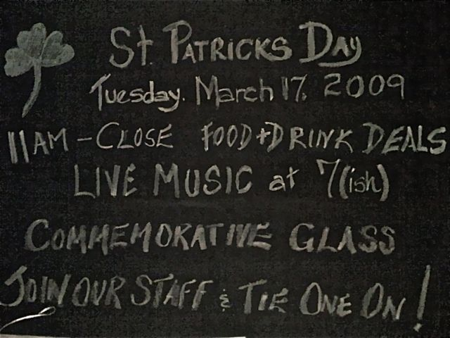
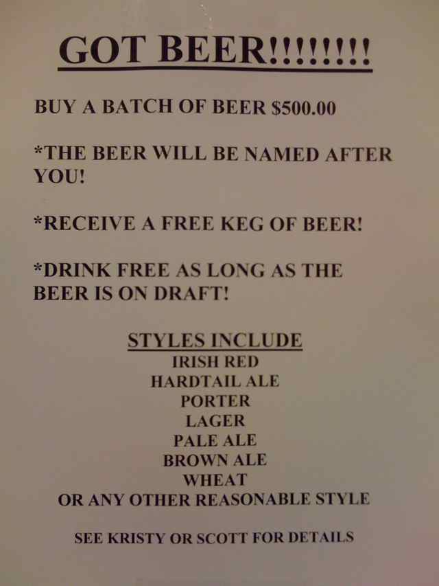


Live Music Events

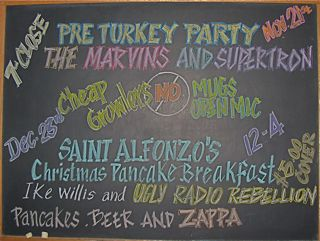
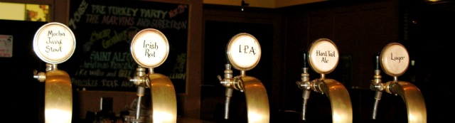
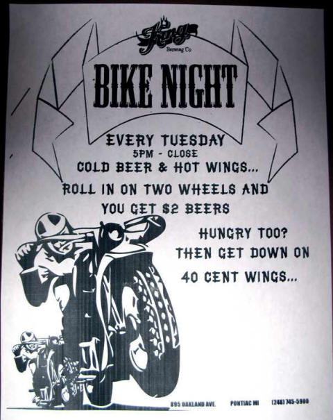
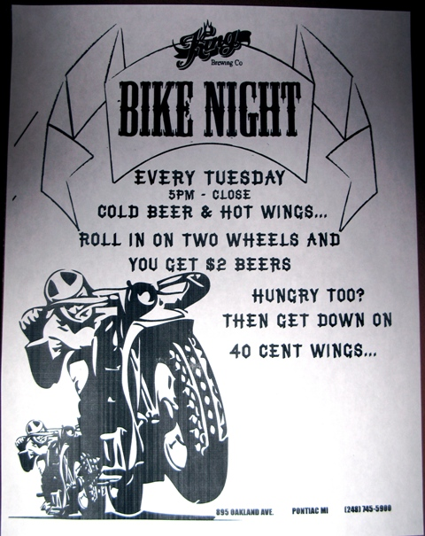
Anniversary Celebrations
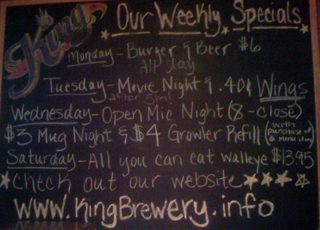
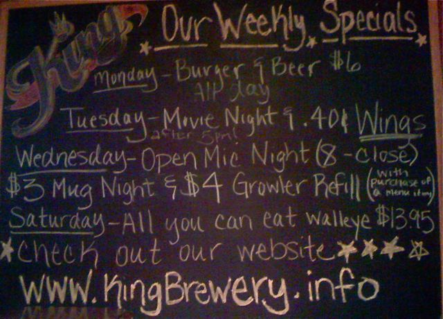
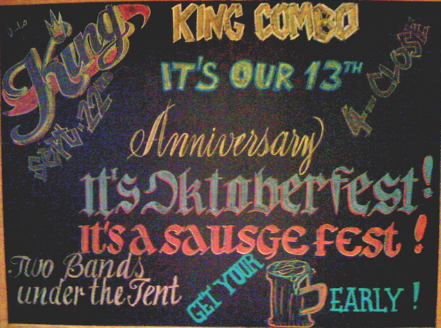
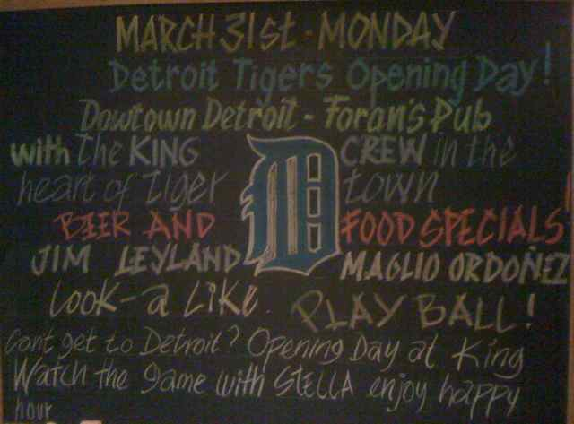
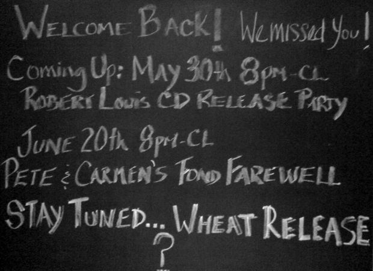
Brewery Culture and People
Product Releases and Special Events
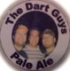
Product Shots and Branding